4 - Exaustão
O pistão sobe e a válvula de exaustão abre permitindo a saída dos gases resultantes da queima e em seguida o ciclo recomeça.

Funcionamento explicado com ilustrações
Motores a combustão interna são máquinas térmicas que transformam a energia proveniente queima de combustível em energia mecânica usada para movimentar a maioria dos meios de transporte do mundo. O funcionamento desses motores ocorre em 4 etapas.
A válvula de admissão é aberta e uma mistura de ar e combustível é enviada para a câmara de combustão por meio de um sistema de injeção eletrônica (ou carburação, em carros mais antigos) enquanto o pistão se move para baixo.
O pistão se move de forma a comprimir a mistura de ar e combustível.
A vela de ignição produz uma centelha ocasionando a queima da mistura. Dessa forma, o pistão se movimenta violentamente para baixo devido a expansão dos gases.
O pistão sobe e a válvula de exaustão abre permitindo a saída dos gases resultantes da queima e em seguida o ciclo recomeça.
“What I cannot create, I do not understand”
- Richard Feynman -